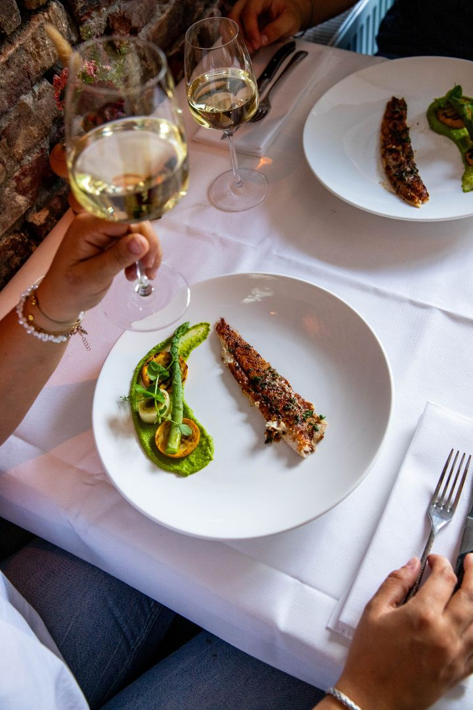
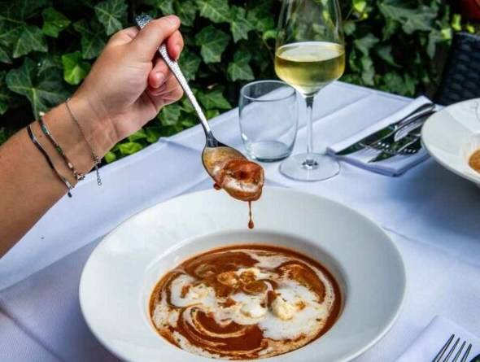
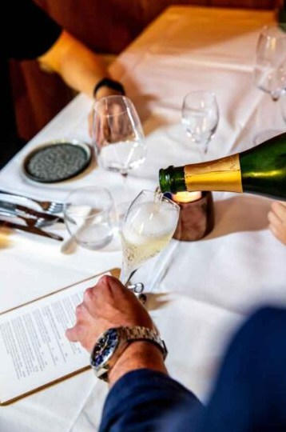
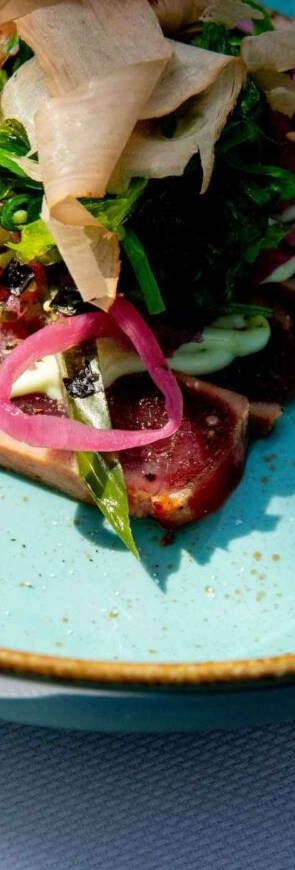
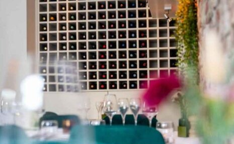
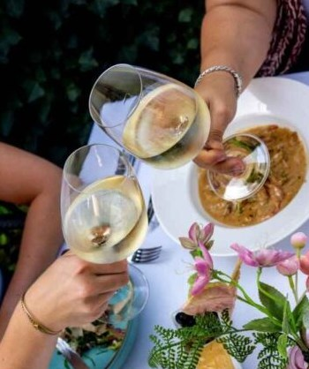
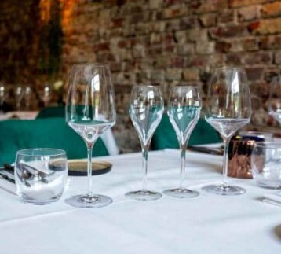
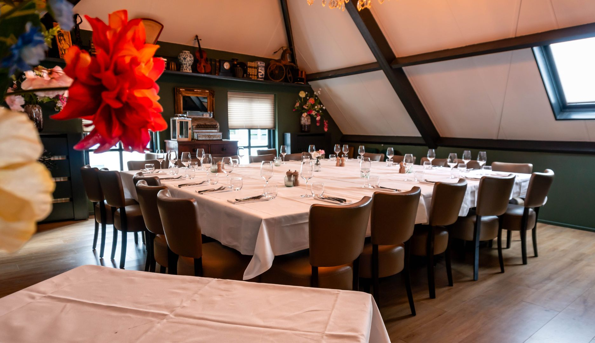

Kerkstraat 10, Vught · sinds 1979
bistroPetite Ruelle
Brabantse gastvrijheid in een Franse sfeer. Een gezellige bistro voor een heerlijke maaltijd en een mooie selectie wijnen.
Ma, do, vr, za vanaf 17:30, zo vanaf 17:00. Di en wo gesloten.
Een Franse bistro met Brabantse gastvrijheid
Bistro Petite Ruelle opende in 1979 haar deuren aan de Kerkstraat 10 in Vught, en verwelkomt sindsdien gasten in een gezellige bistro met een Franse ambiance en Brabantse gastvrijheid.
Kies voor een maaltijd in het restaurant, een ontspannen moment in onze unieke binnentuin of een intiem diner in onze knusse bovenzaal. Of je nu zakelijk komt, met vrienden en familie, of voor een romantisch diner met zijn tweeën: je bent altijd van harte welkom.
De bistro
Beneden, tussen de oude bakstenen, de wijnwand en de witte tafellakens.
De binnentuin
In de lente en zomer zit je beschut buiten, met een hapje en een drankje.
De bovenzaal
Een sfeervol zaaltje voor groepen van 10 tot 35 personen.
Naast contant en pinnen kun je bij ons ook betalen met de VVV-Dinercheque en de Restaurant Cadeaukaart.


Menukaart
Voorgerechten en hoofdgerechten van onze à la carte kaart, met daarnaast een speciaal menu. Liever truffelmayonaise bij de carpaccio, of eendenlever bij je tournedos? Dat kan.
Carpaccio
€ 15,50Dun gesneden rundvlees, Parmezaanse kaas, pijnboompitten, spekjes, huisgemaakte pesto en rucola (liever truffelmayonaise + € 1,25).
Een vertrouwde favoriet, maar dan met nét dat beetje extra.
Bisque
€ 17,00Huisgemaakte kreeftensoep met visgarnituur en een wolkje room.
Vol en romig, met een zachte ziltige toets.
Kikkerbillen
€ 18,50Zacht gebakken in een romige knoflooksaus.
Licht, kruidig en verrassend verfijnd.
Zwezerik
€ 25,50Krokant gebakken, met saus Albufeira, Pata Negra en bieslookolie.
Een rijke combinatie van hartig en zachtzoet, vol contrast.
Escargots
€ 13,50Met kruidenboter, knoflook, champignons, paprika en bieslook.
Intens en kruidig, perfect om het brood in te dopen.
Entrée Bistro
€ 17,00Carpaccio, gerookte zalm en tonijntataki op één bord.
Drie smaken, drie texturen, één harmonieus geheel.
Tonijn tataki
€ 14,50Met zoetzure groente, wasabimayonaise, wakame, furikake en bonitoflakes.
Fris en licht pittig, met een speels oosters accent.
Foie gras
€ 21,50Met briochebrood, sjalotten-Pedro Ximénezcompote en balsamico.
Romig en verfijnd, met een perfecte balans.
Burrata
€ 13,50Groene asperge, sinaasappel, geroosterde amandel, groene olijfjes en sinaasappeldressing.
Fris, kleurrijk en zomers.
Tournedos
€ 33,50Ossenhaas met saus naar keuze (met gebakken eendenlever + € 7,50).
Botermals en perfect gegaard, precies zoals u hem wilt.
Chateaubriand voor 2 personen
€ 75,00400 g ossenhaas met gebakken groenten en spekjes.
Een gerecht om te delen, of niet.
Noordzeetong à la meunière
€ 49,50Hele tong (500 tot 600 g), klassiek in boter gebakken.
Zacht van structuur, met een hint van citroen.
Ribeye
€ 28,50Met gorgonzola uit de oven en chimichurri.
Romig, kruidig en met een pittige bite.
Kabeljauwrugfilet
€ 27,50Met wakame-zuringsaus, zeekraal en bonitoflakes.
Puur van smaak, met een mooie balans tussen friszuur, zilt en umami.
Grote gamba's
€ 25,50Met knoflook, rode peper, olijfolie, citroen en peterselie.
Zonnig, kruidig en vol levendige smaken.
Kalfsoester
€ 27,50Gevuld met gerookte zalm en bieslook, met rode portsaus.
Zacht vlees met een verfijnde, licht zoete touch.
Lamsrack / lamsnek
€ 29,50Langzaam gegaarde lamsnek, ras-el-hanoutjus en gegrilde lamsrack.
Klassieker met diepte en kruidigheid.
Tortelloni
€ 22,50Gevuld met bospaddenstoelen, truffel, pijnboompitten en pecorino.
Aards, romig en rijk van smaak.





Wijnkaart
Per glas en per fles. Tik op een wijn voor de beschrijving.
Witte wijn glas / fles
Laurent Miquel Père et Fils Sauvignon Blanc Frankrijk6,50 / 29,50
Wit fruit en hints van witte bloesem geven deze fruitige, frisse wijn haar vulling. De mooie balans komt van de prettige zuren en zachte body.
Chardonnay Tera Noble Frankrijk6,80 / 31,50
Een elegante wijn met tonen van exotisch fruit en perzik.
Ramón Bilbao Verdejo Spanje8,20 / 38,50
Aroma's van passievrucht, anijs, venkel en tropisch fruit zorgen voor levendigheid in het glas. Een klein bittertje, frisheid en een zachte afdronk.
Muré Pinot Gris 'Pierres Sèches' Frankrijk9,95 / 47,50
Licht gele, briljante kleur met groene tinten. In de neus gele perzik en peer; fris, sappig en zacht met tonen van geel fruit en kardemom. Mooi uitgebalanceerd.
Salentein Selection Sauvignon Blanc Argentinië8,20 / 38,50
Lichte bleekgele kleur, intense aroma's van limoen, peren, vijgen en kruidige tonen van witte peper en buxus. Vol en sappig met een perfecte structuur.
Steininger Grüner Veltliner Reserve Oostenrijk9,00 / 42,50
Helder bleekgeel. Een heerlijk frisse wijn met een aantrekkelijk bouquet van bloemen en witte peper.
Mar de Frades Albariño Spanje9,95 / 47,50
Bleekgeel, met aroma's van bloemen en citrusfruit. Zuiver en elegant; sappig met mooie zuren en een goede balans.
Laurent Miquel Lieu-dit Vérité Viognier Frankrijk10,40 / 49,50
Dé pure expressie van de viognier: witte perzik, abrikoos en honingzoete bloemen, met hints van geïntegreerd eikenhout en een lange afdronk.
Kendall-Jackson Reserve Chardonnay Verenigde Staten11,00 / 52,50
Een wereldtopper uit Californië, vol en licht romig. Fris en elegant met tropisch fruit, mango, ananas, appel en peer, en fijne geroosterde tonen.
Hubert Brochard Pouilly-Fumé Frankrijk11,50 / 55,00
Kristalachtig geel. Harmonie tussen citrusvruchten en witte bloemen; frisheid, mineraliteit, perzik en ander steenfruit.
Rode wijn glas / fles
Portillo Malbec, Bodegas Salentein Argentinië6,50 / 29,50
Smaken van kersen, framboos en aalbessen in een donkerpaarse rode wijn.
Ramón Bilbao Rioja Crianza Spanje8,20 / 38,50
Zwart fruit, pruimen, kruiden en kokos. Zwoele, zachte en rijpe tannines met een prachtige elegantie.
Laurent Miquel Les Auzines Corbières Frankrijk8,10 / 39,50
Dieprood met een paarse gloed. Rijk en geconcentreerd, maar fris en elegant; rijpe kersen met tijm, salie en peper uit de Languedoc. Kan iets gekoeld gedronken worden.
Kendall-Jackson Reserve Pinot Noir Verenigde Staten11,00 / 52,50
Kersen, aardbeien en frambozen met elegante aardse tonen, accenten van cola, vanille, toast en milde kruiden, frisse zuren en rijpe tannine.
Ellermann-Spiegel Spätburgunder Trocken Duitsland8,40 / 39,50
Kersenrood en helder. Kruidig, met bosfruit en kersen; rijpe aanzet met een prettig zoetje, een bittertje en tannine.
Masca del Tacco Primitivo di Manduria Italië9,20 / 43,50
Jam en rood fruit met een beetje kaneel. Zacht en complex, vol en krachtig met zwart fruit, kruiden en vanille.
Ramón Bilbao Reserva Spanje, 90% tempranillo, 7% graciano, 3% mazuelo9,40 / 44,50
Dieprood en intens. Bramen, zwarte pruimen en specerijen, met een hint van hout en vanille. Vol, elegant en een lange afdronk.
Farina Valpolicella Ripasso Classico Superiore Italië9,80 / 46,50
Rijp en rijk: pruim en kersenjam, met tannine, frisse zuren en zoet in balans, en op de achtergrond peper, leer en gember.
D. Piron Fleurie Frankrijk10,40 / 49,50
Intens karmijnrood. Bloemig en fruitig met iris, violet en perzik. Elegant en fijn.
Rosé glas / fles
Sélection Cazal Viel Rosé Frankrijk6,50 / 29,50
Rood fruit in de neus, aangevuld met zachte wilde bloemen. Een slanke, frisse, droge rosé.
Ramón Bilbao Rosado Spanje7,60 / 35,50
In Provençaalse stijl, bleek van kleur. Fruitig en fris, met een zachte textuur en makkelijk te drinken.
Roubine Rosé 'La Vie en Rosé' Provence, Frankrijk8,80 / 41,50
Rode bessen en grapefruit, een complexe balans tussen fruitig en fris met exotische tonen zoals lychee.
Mousserend glas / fles
Cava Clos Amador Brut Reserva Delicat Spanje7,00 / 35,00
Citrusfruit, groene appel en een hint van gerijpt wit (perzik)fruit, met een mooie finale.
Alcoholvrij glas / fles
Al Mercado Brut Blanco 0.0 Alcoholvrije sparkling7,00 / 35,00
Alle eigenschappen van een cava, zonder alcohol. Citrus, groene appel en bloemige tonen, met mango en ananas en een zoete afdronk.
Winfree De-Alcoholized White6,50 / 29,50
Verfrissende tonen van appel en limoen, fruitig met lichte zuren.
Epicuro Rosso alcoholvrij6,50 / 29,50
Zwarte bes (cassis), kruidige vanilletonen en subtiel hout. Fruitig en licht zoet.
Dessertwijn & port per glas
- Muscat de Rivesaltes Blanc, Frankrijk8,00
- Graham's Fine White Port6,50
- Graham's Six Grapes Reserve Ruby Port6,50
- Graham's The Tawny Port10,50
- Graham's 10 Years Old Tawny Port14,50
- Graham's 20 Years Old Tawny Port18,50
- Graham's 30 Years Old Tawny Port22,50
- Graham's portproeverij (3 glaasjes): The Tawny, 10 en 20 Years Old Tawny24,50
Alle prijzen in euro's.

Met een groep of zakelijk dineren
Een familie- of zakelijk diner, of uit eten met een grote groep vrienden? Dat kan zeker. We vragen je wel om telefonisch te reserveren.
Boven hebben we een exclusieve, sfeervolle zaal voor gezelschappen vanaf 10 tot 35 personen: helemaal voor jullie alleen, voor een borrel, vergadering of diner. Vraag gerust naar de mogelijkheden.
Kerst bij Petite Ruelle
Kom op eerste of tweede kerstdag gezellig lunchen of dineren. Op beide kerstdagen kun je reserveren op deze tijden:
- 14:00 lunch beneden in de bistro
- 17:00 diner in het zaaltje
- 19:00 diner beneden in de bistro
Reserveren kan uitsluitend telefonisch: vraag naar Michel Selten en geef bij je reservering je menukeuze door. Medio december bevestigen we alle reserveringen telefonisch.
Bel 073 656 58 72Word jij onze Bistro-topper?
Werken in een gezellige bistro met een Franse ambiance, in een leuk team met een fijne werksfeer? Bel, mail of wandel gewoon even binnen.
Solliciteer per mailBediening
Een enthousiaste medewerker voor de bediening (vanaf 16 jaar). Gastvrij, houdt van gezelligheid en bezorgt gasten een topavond.
Afwas
Een afwasser (vanaf 15 jaar) die niet bang is voor een beetje schuim en alle borden weer spic en span maakt.
Keuken
Versterking in de keuken: je pakt aan, hebt passie voor koken en helpt mee de lekkerste gerechten te bereiden.
Tot ziens in de Kerkstraat
Bistro Petite RuelleKerkstraat 10
5261 CR Vught
073 656 58 72
info@bistropetiteruelle.nl
| Maandag | vanaf 17:30 |
|---|---|
| Dinsdag | gesloten |
| Woensdag | gesloten |
| Donderdag | vanaf 17:30 |
| Vrijdag | vanaf 17:30 |
| Zaterdag | vanaf 17:30 |
| Zondag | vanaf 17:00 |